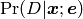

The concept of a model is key to the use of QInfer. TODO: fill this out.
Both Model and Simulatable offer basic functionality to describe how they are parameterized, what outcomes are possible, etc. For this example, we will use a premade model from test_models, SimplePrecessionModel.
>>> from qinfer.test_models import SimplePrecessionModel
>>> m = SimplePrecessionModel()
Once a model or simulator has been created, you can query how many model parameters it admits and how many outcomes a given experiment can have.
>>> print m.n_modelparams
1
>>> print m.is_n_outcomes_constant
True
>>> print m.n_outcomes(expparams=0)
2
Both models and simulators allow for simulated data to be drawn from the model distribution using the simulate_experiment() method. This method takes a vector of model parameters and a vector of experiment parameters, then returns an array of sample data.
>>> import numpy as np
>>> modelparams = np.linspace(0, 1, 100)
>>> expparams = np.arange(1, 10) * np.pi / 2
>>> D = m.simulate_experiment(modelparams, expparams, repeat=3)
>>> print type(D)
<type 'numpy.ndarray'>
>>> print D.shape
(3, 100, 9)
If exactly one datum is requested, simulate_experiment() will return a scalar:
>>> print m.simulate_experiment(np.array([0.5]), np.array([3.5 * np.pi]), repeat=1).shape
()
Note that in NumPy, a shape tuple of length zero indicates a scalar value, as such an array has no indices.
The core functionality of Model, however, is the likelihood() method. This takes vectors of outcomes, model parameters and experiment parameters, then returns for each combination of the three the corresponding probability .
>>> import numpy as np
>>> modelparams = np.linspace(0, 1, 100)
>>> expparams = np.arange(1, 10) * np.pi / 2
>>> outcomes = np.array([0], dtype=int)
>>> L = m.likelihood(outcomes, modelparams, expparams)
The return value of likelihood() is a three-index array of probabilities whose shape is given by the lengths of outcomes, modelparams and expparams.
>>> print type(L)
<type 'numpy.ndarray'>
>>> print L.shape
(1, 100, 9)
TODO